Creating a simple sprite
This tutorial will introduce you to Spritely and show how to create your own sprites.
Step 1 : Create a folder for your project
Before starting, you'll need to create a folder in which we can save the files that we'll be creating. If you have a c:\gamedev\projects directory, this is a good location to create your game folder.
Think of a good name for your project and create a new sub-directory here.
Feel free to choose whatever name you like for your project, but make sure that you don't put any spaces or punctuation marks. For example, "mygame" is an acceptable name, but "my game!" is not because it contains a space and exclamation mark.
In this tutorial we will use the uninspired name of mygame.
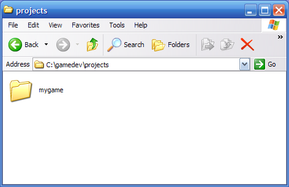
Step 2 : Launch Spritely
Go to your Spritely directory. This should be c:\gamedev\Spritely unless you decided to install it somewhere else.
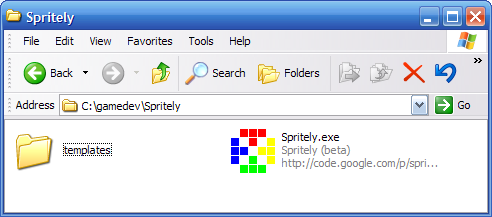
Launch Spritely by double-clicking the Sprite.exe icon.
This will bring up the main Spritely window. There are 3 sub-windows: a list of sprites on the left, a color palette on the bottom, and the sprite editing area (with drawing tools) occupying the rest of the space.
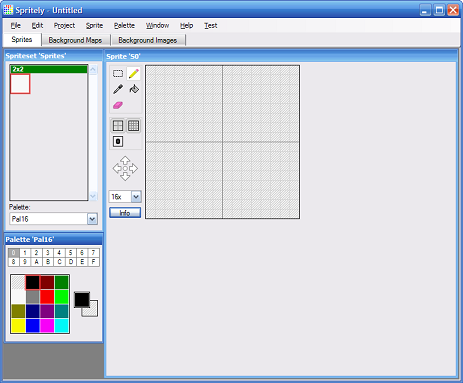
Step 3 : Create a sprite
Use the pencil tool (selected by default) to draw an outline for a simple sprite. Choose another color and then use the paint bucket tool to fill the sprite. Note that the default background color is white so choose colors that will show up well against a white background.
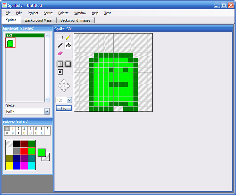
Don't worry about making it perfect — you can come back and make adjustments later.
Step 4 : Save progress
Before moving on, now is a good time to save your progress so far.
To save your data in Spritely, select "Save" from the "File" menu and choose the directory that you just created: c:\gamedev\projects\mygame.
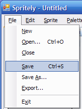
If you chose mygame as the name of your file, your data will be saved in file called mygame.xml.
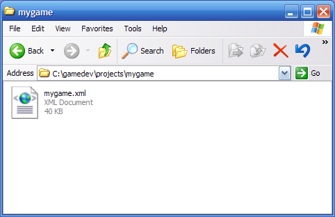
Make sure you save your progress often as you work.
Step 5 : Export
Now that you've saved your work, you can use Spritely to export your sprites along with source code to create a Gameboy Advance project.
Select "Export..." from the "File" menu.
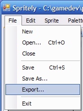
That will bring up the "Export" dialog.
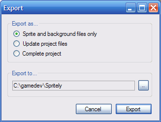
Change "Export as..." to "Complete project".
For the "Export to...", press the "..." button on the far right...
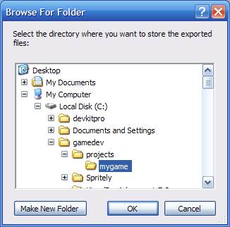
...and select the c:\gamedev\projects\mygame directory that you created earlier for your project.
When you're done, press the "OK" button.
Now that you've selected a project directory, the "Export" dialog should look like this.
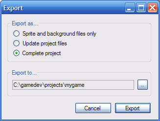
Press the "Export" button.
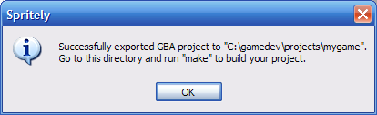
Success! You have exported you sprites as a GBA project.
If you look at your c:\gamedev\projects\mygame directory, you will see the newly-created files.
Makefile — This file contains the instructions for building the GBA ROM file.
mygame.pnproj — The Programmer's Notepad project file.
source/ — This directory contains all of the source files for the game.
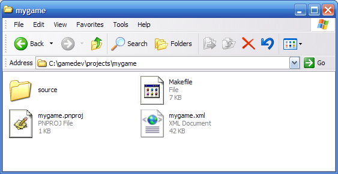
We will be making use of these files in the next tutorial where we will build a ROM file that we can run in an emulator (or on real GBA hardware).